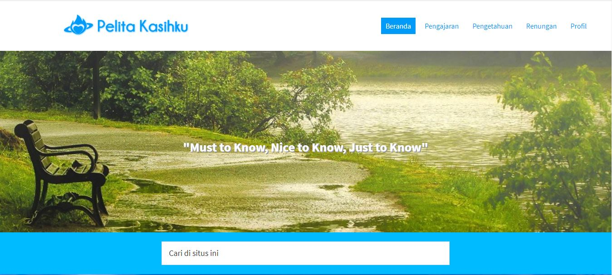
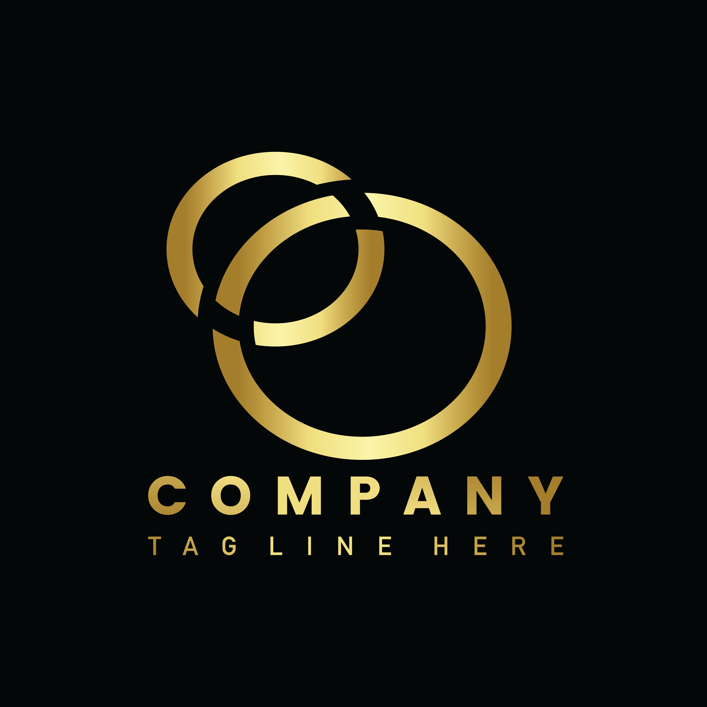
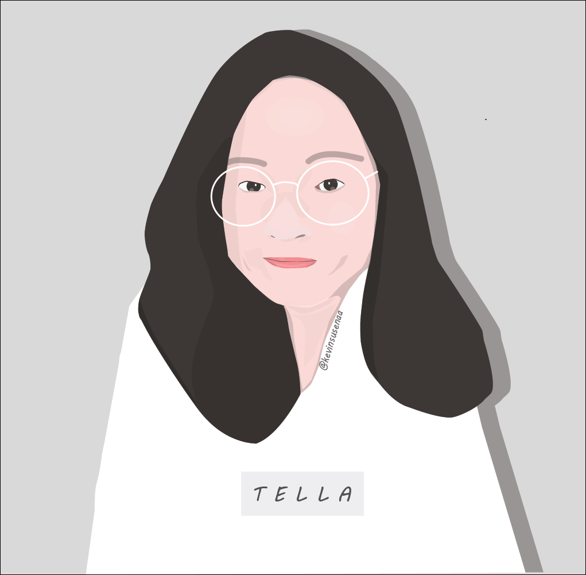

P R O J E C T
WPAP PROJECT

WPAP atau Wedha's Pop Art Potrait adalah suatu gugus seni ilustrasi potret wajah yang bersaling-silang secara geometri dengan penggunaan kontradiksi warna-warna khusus. Dimensi dari gambar yang di-trace (gambar ulang dengan acuan) tidak berubah, sehingga penampakan akhir dari objek yang di transformasi jelas dan menyerupai aslinya sehingga mudah dikenali. WPAP di atas tersebut saya buat untuk keperluan ujian pada saat pendidikan janjang SMK.
WEBSITE
Website adalah sebuah kumpulan halaman pada suatu domain di internet yang dibuat dengan tujuan tertentu dan saling berhubungan serta dapat diakses secara luas melalui halaman depan (home page) menggunakan sebuah browser menggunakan URL website. Domain yang sudah ada (pelitakasihku.com)
LOGO
Logo itu sendiri merupakan suatu gambar atau sekadar sketsa dengan arti tertentu, dan mewakili suatu arti dari perusahaan, daerah, organisasi, produk, negara, lembaga, dan hal lainnya membutuhkan sesuatu yang singkat dan mudah diingat sebagai pengganti dari nama sebenarnya. Logo di atas tersebut saya buat untuk melengkapi portofolio saya.
VECTOR
Saya membuat suatu usaha online di instagram yang bernama @vectornaa . Disitu akan disediakan jasa untuk membuat suatu vektor sesuai cirikhas toko itu sendiri.